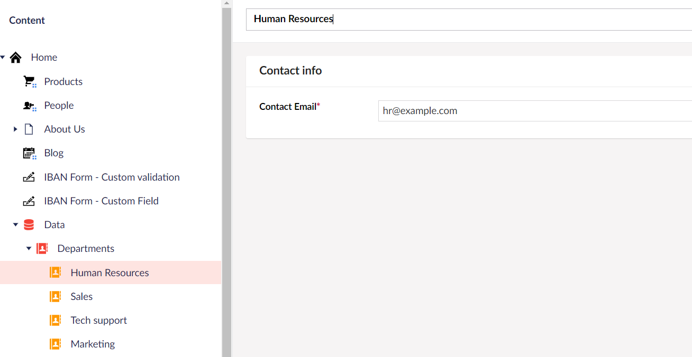
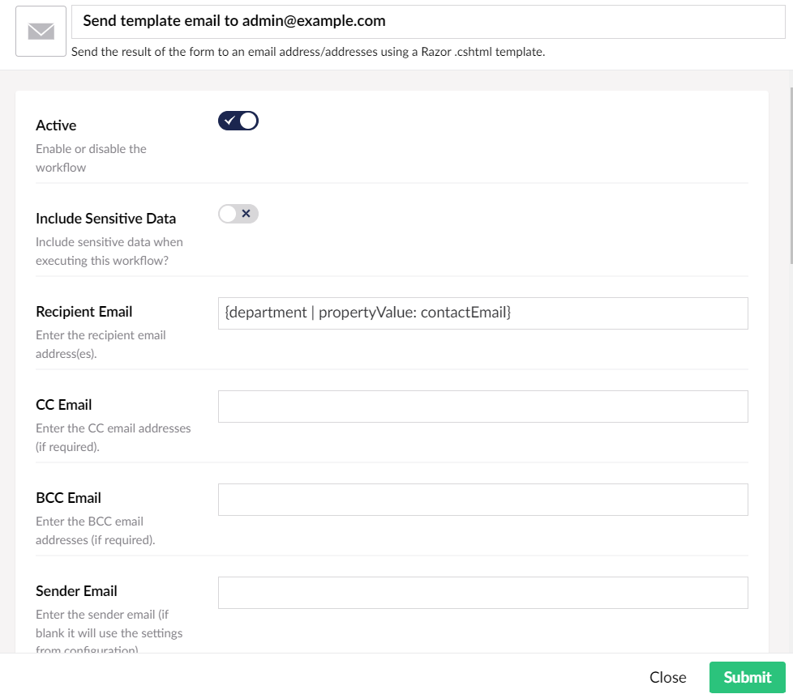

First released around 2010 as Contour
Commercial add-on developed by Umbraco HQ
Rebranded to Umbraco Forms around 2016
Allows website editors and developers to create and manage forms directly within the Umbraco environment, without needing to write custom code.
But it can be customized and extended.
Configure default values for design and behavior settings
"Umbraco": {
"Forms": {
"FormDesign": {
"MaxNumberOfColumnsInFormGroup": 12,
"DefaultTheme": "default",
"Defaults": {
"DisableStylesheet": true,
"AutocompleteAttribute": "off",
"Indicator": "*",
"MarkFieldsIndicator": "MarkMandatoryFields",
"DaysToRetainApprovedRecordsFor": 90,
"DaysToRetainRejectedRecordsFor": 90,
"DaysToRetainSubmittedRecordsFor": 90
}
}
}
}
Customize settings
for provider
types
(fields, workflows,..)
Provide a default value
Read only mode
Hide the setting
"Umbraco": {
"Forms": {
"FormDesign": {
"SettingsCustomization": {
"FieldTypes": {
"shortAnswer": {
"AutocompleteAttribute": {
"IsHidden": true,
"DefaultValue": "off"
}
}
}
}
}
}
}
Out of the box when creating a new form a consent field and a e-mail workflow are added,
but this can be changed
For fields replace the implementation of the IApplyDefaultFieldsBehavior interface
For workflows replace the implementation of the IApplyDefaultWorkflowsBehavior interface
public class ApplyDefaultFieldsBehavior : IApplyDefaultFieldsBehavior
{
private readonly FormDesignSettings _formDesignSettings;
private readonly FieldCollection _fieldCollection;
public ApplyDefaultFieldsBehavior(
IOptions formDesignSettings,
FieldCollection fieldCollection)
{
this._formDesignSettings = formDesignSettings.Value;
this._fieldCollection = fieldCollection;
}
public void ApplyDefaultFields(FormDesign form)
{
Page page = new Page();
form.Pages.Add(page);
FieldSet fieldSet = new FieldSet()
{
Id = Guid.NewGuid()
};
page.FieldSets.Add(fieldSet);
FieldsetContainer container = new FieldsetContainer()
{
Width = 12
};
fieldSet.Containers.Add(container);
var firstNameField = new Field
{
Alias = "firstName",
Id = Guid.NewGuid(),
FieldTypeId = Guid.Parse(Umbraco.Forms.Core.Constants.FieldTypes.Textfield),
Mandatory = true,
Caption = "First name"
};
container.Fields.Add(firstNameField);
if (this._formDesignSettings.DisableAutomaticAdditionOfDataConsentField)
return;
container.AddDataConsentField(this._formDesignSettings, this._fieldCollection);
}
}
Out of the box all provider based types are available
(fields, workflows, etc..)
Remove the ones you don't need
Fields can be marked as mandatory
A regular expression can be applied for format validation
Validation happens client and server side.
Regular expression can be selected from a predefined list or entered manually
The predefined list can be extended with additional validation patterns by registering a class that implements the IValidationPattern interface
In many cases mandatory and pattern validation is not sufficient
The IBAN pattern validation will allow invalid numbers.
At least a checksum validation is needed.
Umbraco Forms publishes a FormValidateNotification before a form submission is being saved.
Umbraco Forms can be extended with custom provider types
It is possible to extend Umbraco Forms with your own field types by registering a class that inherits FieldType
Create a razor view with the name FieldType.DutchIbanField.cshtml in the folder
/Views/Partials/Forms/Themes/default/FieldTypes
Workflows are way to process the form data after a form has been submitted, but before the thank you page is shown.
Workflows can be attached to different form record states (submitted, approved and rejected).
Failed workflows will still show thank you page.
"Thank you page" can be overruled from workflow
Prevalue sources are way to retrieve a list of items from a certain source.
For example a list of departments managed in the content tree

Once a prevalue source has been created it can be used in list based field types, for example a dropdown.
Magic strings enable you to render values from various sources, such as request, dictionary items, session & cookies or page fields
In a workflow they can used to read record values using the syntax {fieldAlias}
Formatting functions can be applied to magic strings. For example {fieldAlias | truncate: 10}
Custom formatting functions can be created by adding a class implementing the IParsedPlaceholderFormatter interface
We used the magic string with our formatting function for the email receiver in the workflow
